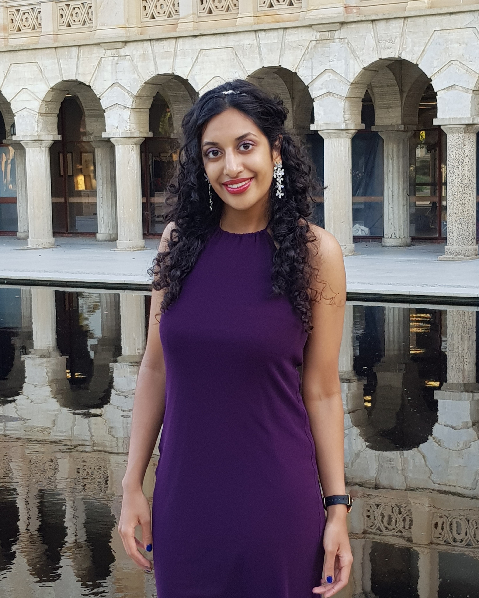

Welcome! I am Naadiyah Jagga
Ph.D. Candidate in Physics & Astronomy
About me

Hi, my name is Naadiyah Jagga and I am a Ph.D. candidate in Astronomy at York University in Canada with Dr. Adam Muzzin.
For my master's, I studied the stellar masses of galaxies with Prof. dr. Henk Hoekstra and Dr. Alessandro Sonnenfeld at Leiden University in The Netherlands. We explored various aspects of stellar mass determination that is valuable to interpret current and future data, and to help clarify the link between stars and dark matter in galaxies.
Before, I received my bachelor's degree in Astronomy at Leiden University. In my second year I observed with four other students the Hα and SII in HII regions with the Isaac Newton Telescope (INT) at the Roque de los Muchachos observatory in La Palma to study the ratio in relation to their age. Then, my final year was filled with a study abroad for one semester to The University of Western Australia in Perth followed by a bachelor project on difference imaging under supervision of Prof. dr. Ignas Snellen. In my first year of the master I worked with Dr. Yamila Miguel on modeling the interior of Jupiter and Saturn to compare different equations of state for ice.
Since the Spring of 2019 I started as a teaching assistant for the Undergraduate course Practical Astronomy and I remained doing this. In the Fall of 2020 I am also assisting the Undergraduate course Introduction to Astrophysics. Above all, I recently joined the Party for the Animals to support the animal welfare.